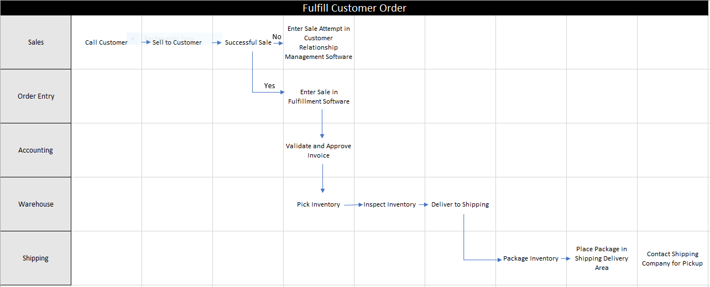

Business Process Mapping
A Business Process Map is a breakdown of a business activity into each of the steps that constitute the entire activity. For example, the name of the business activity is "Check Unread E-mail". The steps involved in checking e-mail are: turn on the computer, login to the operating system, open the e-mail software, and read the unread e-mails. In this instance, the actor for all of the steps is the same. In most Business Process Maps there is more than one actor which is typically a group of people: Sales Team, Accounting Team, Warehouse Team, Editorial Team, etc. Swim Lane Diagrams take into account the cross-functional nature of most business activities and are useful as a visual representation of the steps and teams involved in completing a business process.
Swim Lane Diagrams
Swim Lane Diagrams are cross-functional1 business process flows that clearly depict the actor2 that is responsible for the step in the process flow. In a swim lane diagram the processes and decisions are grouped visually by placing them in lanes. Each lane is labeled with the actor responsible for the step in the process flow. The swim lane diagram moves from left to right or top to bottom as each step is completed and handed off from one actor to another.
{kind=link}

1Cross-Functional -
relating to a system whereby people from different areas of
an organization work together as a team.
2Actor - person, group, resource or sub-process.